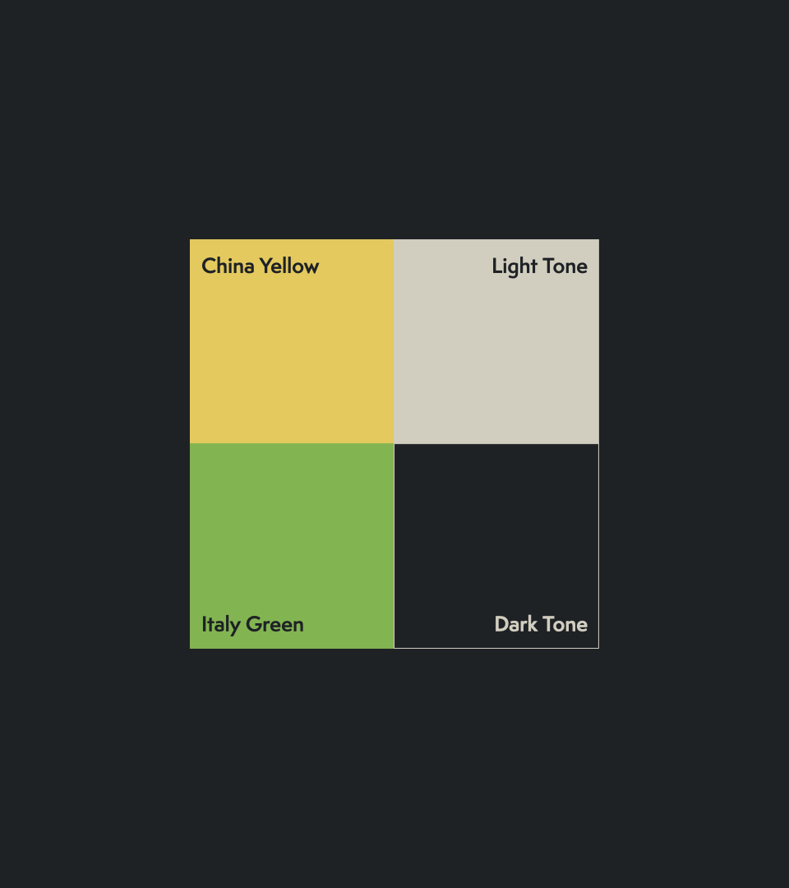
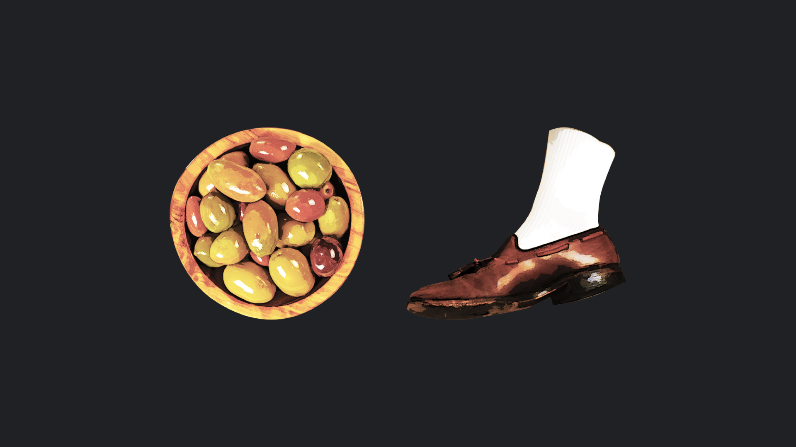
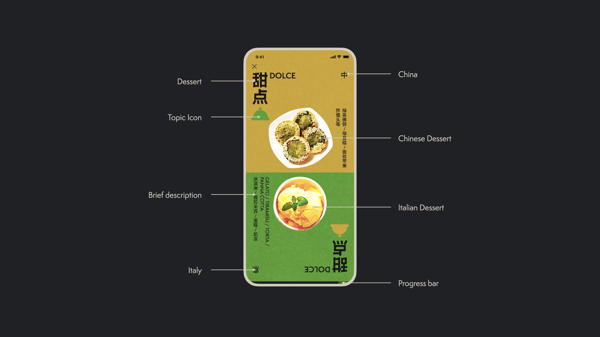
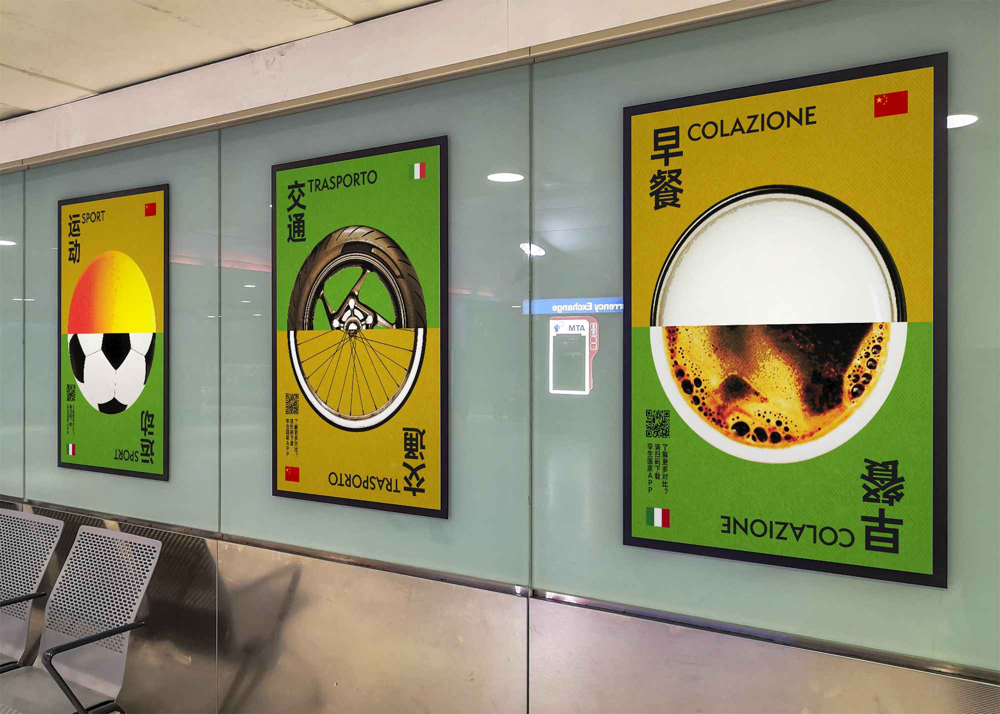
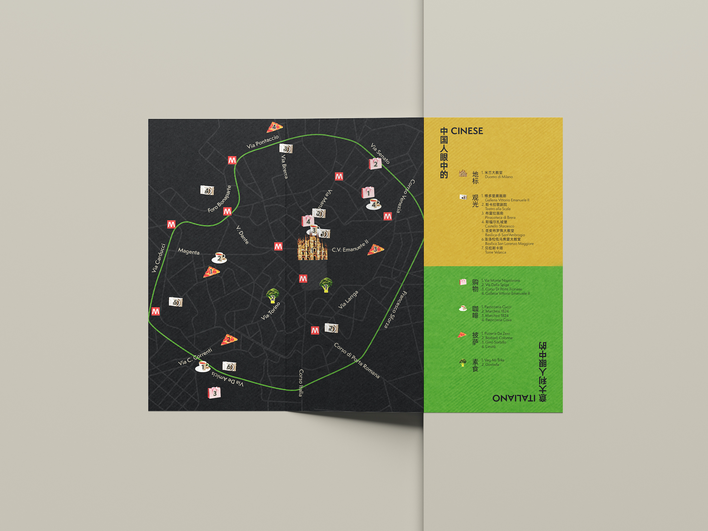
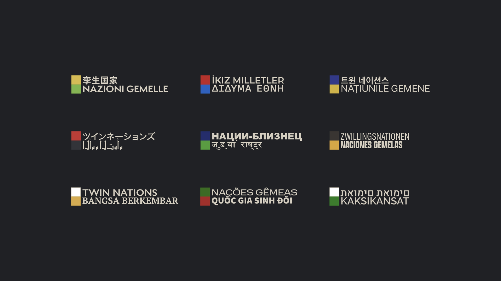

UX/UI design / App design / Branding / Advertising
The problem
86% of young travellers chose new culture as their reason for travelling.
However, it is hard to go in-depth into local culture as traditional travel guides only cover topics like attractions and restaurants, but hardly show details of local people’s life.
How to help young travellers to fully immerse in a new culture?
The solution
My solution is an online travel guide that compares the lifestyles of travellers home country and destination country side by side.
Because travellers and countries all over the world is such a broad topic, I narrowed it down to Chinese tourists traveling to Italy as an example to answer this question.
The direction of Twin Nations’ Chinese text is inspired by traditional Chinese writing which is from top to bottom and from right to left, contrasting to its Italian counterpart.



The app is fairy simple to use and has only one main feature, which is the comparison section. Split screen is used to display home country at the top and destination country at the bottom.


The solution is only for a specific situation where Chinese tourists travel to Italy. That means now any two cultures can be compared borrowing the formula of putting them side by side. Whether it’s the UK versus Malaysia or Greece versus Egypt, the possibilities are endless.
